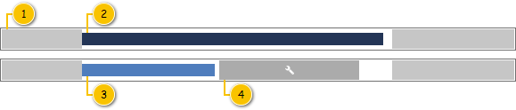
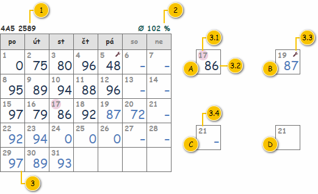

Dokument obsahuje popis dílčích komponent, které jsou použity v rámci obrazovek s časovým využitím vozidel. Tyto komponenty jsou společné, a tak jsou popsány na jednom místě. V ostatních dokumentech je na ně pak odkazováno.
Postupně jsou popsány jednotlivé dílčí komponenty pro vizualizaci časového využití vozidel.
Diagram časového využití Denního výkonu, který je vykreslen v rámci buňky tabulky. Vstupem diagramu jsou pak následující data:
Poznámka: Pokud na je vstupu předáno NULL, je zobrazena pouze prázdná buňka.

| Callout | Popis | Poznámka |
|---|---|---|
| 1 | Intervaly omezení denního výkonu typu Mimo provozní dobu – naznačují, která část Denního výkonu se vyskytuje mimo provozní dobu. | – |
| 2 | Časové využití Denního výkonu – skutečnost (získáno z GPS jednotky Vozidla). | Význam prvku a zdroj hodnoty bude v rámci M7 změněn. |
| 3 | Časové využití Denního výkonu – plán (naplánováno uživatelem). | Význam prvku a zdroj hodnoty bude v rámci M7 změněn. |
| 4 | Intervaly omezení denního výkonu typu Alokace na servis – naznačují, která část Denního výkonu je vyhrazena pro servisní úkony. | – |
Jednotlivé datové body, které se v diagramu vyskytují, jsou vykreslovány různým způsobem, ten je popsán dále.
Prvním parametrem datového bodu je „výška čáry“, kdy jsou použity tyto základní úrovně:
| Úroveň | Výška datového bodu | Použití |
|---|---|---|
| 1 | 100 % | |
| 2 | 65 % |
|
Druhým parametrem, který je potřeba rozlišit, jsou vrstvy, ve kterých budou jednotlivé datové body vykresleny. Tím je definován způsob, které datové body mohou být „překryty“ a které ne. Použity jsou pak tyto základní úrovně, kdy první je vykreslena navrchu a poslední vespod:
| Úroveň | Použití |
|---|---|
| 1 |
|
| 2 |
Nejprve jsou vykresleny Intervaly omezení denního výkonu, a to následovně:
Poznámka: Na pořadí, ve kterém jsou jednotlivé Intervaly omezení denního výkonu v rámci jednotlivých kroků vykresleny, nezáleží.
Nakonec je vykresleno časové využití, a to následovně:
Původní algoritmus – bude smazán.
Poznámka: Časová (vodorovná) osa diagramu je ohraničena body 0:00 a 23:59.
Kalendář časového využití Denních výkonů za období o délce právě jednoho měsíce. Vstupem diagramu jsou pak následující data:

Nejprve jsou popsány jednotlivé typy buněk, které se v kalendáři časového využití vyskytují. Dále je pak rozebrána struktura samotné buňky – jedna buňka představuje jeden Denní výkon.
| Callout | Popis | Poznámka |
|---|---|---|
| A | Buňka kalendáře časového využití, kdy dostupný Denní výkon, který je již potvrzen jako realizovaný. | Význam prvku a zdroj hodnoty bude v rámci M7 změněn. |
| B | Buňka kalendáře časového využití, kdy je dostupný Denní výkon, který zatím není potvrzen jako realizovaný. | Význam prvku a zdroj hodnoty bude v rámci M7 změněn. |
| C | Buňka kalendáře časového využití, kdy datum realizace vychází na sobotu či neděli a zároveň je splněna jedna z uvedených podmínek:
| – |
| D | Buňka kalendáře časového využití, kdy datum realizace nevychází na sobotu či neděli a zároveň není dostupný Denní výkon. | – |
| Callout | Komponenta | Nadpis | Typ komponenty | Příklad hodnoty | Hodnota | Výchozí hodnota | Formát | Zpřístupněná | Viditelná | Chování | Validace | Poznámka |
|---|---|---|---|---|---|---|---|---|---|---|---|---|
| 1 | Nadpis kalendáře | – | Label | 4A5 2589 | Získána ne vstupu: Nadpis. | – |
| – | Vždy | – | – | – |
| 2 | Průměrné časové využití | – | Label | Ø 102 % | Získána ne vstupu: Průměrné časové využití. | – | Ø
Barva písma závisí na konkrétní zobrazené hodnotě:
Pokud bylo na vstupu předáno NULL, je místo hodnoty zobrazen zástupný text: – (ALT+0150). Barva písma je pak nastavena do výchozího stavu. | – | Vždy | – | – | – |
| 3 | Buňka kalendáře | – | – | – | – | – | – | – | – | Vykreslení kalendáře časového využití | – | – |
| 3.1 | Zvýraznění dnešního dne | – | – | – | – | – | Jedná se o barevné podbarvení ve tvaru kruhu pod Datem realizace (komponenta 3.4).
| – | Pokud se hodnota odpovídajícího data realizace shoduje s dnešním datem. | – | – | – |
| 3.2 | Časové využití | – | Label | 96 | Entita Denní výkon, která je v buňce zobrazena (dle atributu Datum realizace). | – | Formát hodnoty časového využití Původní algoritmus – bude smazán. Pokud je k dispozici Denní výkon: <Časové využití>
Jinak: Pokud datum realizace vychází na sobotu či neděli, místo hodnoty je zobrazen zástupný text: – (ALT+0150).
| – | Pokud datum realizace vychází na sobotu či neděli. Pokud je k odpovídajícímu datu realizace dostupný Denní výkon. | – | – | Pokud datum realizace nevychází na sobotu či neděli a zároveň není k tomu datu realizace dostupný Denní výkon, není Časové využití zobrazeno vůbec. |
| 3.3 | Indikace servisu | – | – | – | Entita Denní výkon, která je v buňce zobrazena (dle atributu Datum realizace). | – | Ikona a její barva: Ostatní/Obsažen servis. | – | Pokud je k odpovídajícímu datu realizace dostupný Denní výkon. Pokud je v odpovídajícím Denním výkonu obsažen alespoň jeden Interval omezení denního výkonu typu Alokace na servis (atribut Typ omezení entity Interval omezení denního výkonu typu – atribut Intervaly omezení entity Denní výkon). | – | – | – |
| 3.4 | Datum realizace | – | Label | 21 | Získáno při vykreslení kalendáře časového využití ze vstupních dat: Měsíc. | – |
| – | Vždy | – | – | Pro každé datum realizace nemusí být k dispozici Denní výkon. |
Nejdříve je vykreslen nadpis kalendáře časového využití, který je složen ze dvou částí:
Následně je doplněn kalendář časového využití, který je reprezentován tabulkou. Struktura je pak pevně dána:
Poznámka: Pokud by došlo k případu, kdy je pro zobrazení měsíce nutné použít 7 řádků kalendáře, je počet řádků kalendáře přizpůsoben. Pokud je zobrazeno více kalendářů na jedná obrazovce zároveň a pokud má alespoň jeden z nich 7 řádků, mají stejný počet řádků i ostatní kalendáře ve stejném řádků matice kalendářů.
První řádek představuje hlavičku, která obsahuje zkrácené názvy dní: Po, Út, St, Čt, Pá, So, Ne.
Poznámka: Pro nadpisy soboty a neděle je pak použita méně výrazná barva než u ostatních dní.
Ostatní řádky představují konkrétní dny (potažmo Denní výkony), které jsou vkládány po řádcích – vykreslení kalendáře časového využití začíná v prvním řádku za hlavičkou a ve sloupci, kterému odpovídá první den Měsíce, který je získán na vstupu. Následně je ve vodorovném směru pokračováno do doby, kdy je dosaženo posledního dne zvoleného Měsíce, který je získán na vstupu. Pro každé datum realizace je pak vykreslena buňka kalendáře časového využití (komponenta 3).
Dny z předchozích/následujících měsíců vykresleny nejsou.
Poznámka: V ojedinělých případech může nastat situace, kdy poslední řádek neobsahuje žádnou hodnotu (jedná se o měsíc únor mimo přestupný rok, který začíná v pondělí).
Pokud je k dispozici Denní výkon, odpovídá zobrazená hodnota jeho stavu (atribut Stav):
Jinak odpovídá zobrazená hodnota konkrétnímu dni:
| Použití | Barva | Ikona | Poznámka | |
|---|---|---|---|---|
| Časové využití | Skutečnost | #223A5E | – | – |
| Plán | #4F84C4 | – | ||
| Skutečnost (světlá) | #919daf | – | Pro případy, kdy je potřeba vepsat text na pozadí této barvy. | |
| Plán (světlá) | #a7c2e2 | – | ||
| Interval omezení | Mimo provozní dobu | #CCCCCC | – | – |
| Alokace na servis | #B3B3B3 | ra-wrench | ||
| Ostatní | Obsažen servis | #672E3B | ra-wrench | – |
| Dnešní den | #F3D6E4 | – | ||
| Průměrné časové využití | Nad mezí | #006E6D | – | – |
| Pod mezí | #672E3B | – | ||
| Odkaz | Stručný popis změny/doplnění |
|---|---|
| Kalendář | Změna formátu hodnoty s časovým využitím (naznačeno modře). Poznámka: kalendář je použit na více místech v systému, změna se tedy projeví na více místech. |
| Odkaz | Stručný popis změny/doplnění |
|---|---|
| Použité barvy a ikony | Doplněny barvy pro zobrazení časového využití umožňující vepsání textu (naznačeno modře). |
Jedná se o změny, které proběhnou v rámci M9.
| Odkaz | Stručný popis změny/doplnění |
|---|---|
| Použité barvy a ikony | Aktualizovány použité ikony (naznačeno modře). Ovlivní následující obrazovky: |
Provedené změny korespondují s akceptačními testy pro M6 (potřebná data jsou k dispozici až v rámci M8) – bude zobrazováno využití Vozidla podle toho, zda jsou již k dispozici data ze skutečného provozu (z GPS jednotky). Změna se pak projeví na těchto obrazovkách:
| Odkaz | Stručný popis změny/doplnění |
|---|---|
| Diagram časového využití denního výkonu | Aktualizován význam použitých barev v rámci diagramu (naznačeno modře). |
| Vykreslení diagramu | Aktualizován popis vykreslení časového využití v diagramu (naznačeno modře). |
| Aktualizován význam použitých barev v rámci kalendáře (naznačeno modře). | |
| Formát hodnoty časového využití | Aktualizován popis vykreslení časového využití v kalendáři (naznačeno modře). |
| Použité barvy a ikony | Aktualizován popis jednotlivých barev (naznačeno modře). |
| Odkaz | Stručný popis změny/doplnění |
|---|---|
| Vykreslení diagramu | Doplněna poznámka o výplni datového body představující Interval omezení denního výkonu typu Mimo provozní dobu pomocí šrafování. |
| Odkaz | Stručný popis změny/doplnění |
|---|---|
| Vykreslení kalendáře časového využití | Doplněna poznámka, že nadpisy sloupců představující sobotu a neděli nejsou tak výrazné jako zbývající dny. |
| Odkaz | Stručný popis změny/doplnění |
|---|---|
| Vykreslení kalendáře časového využití | Opraven počet řádků komponenty s kalendářem. |